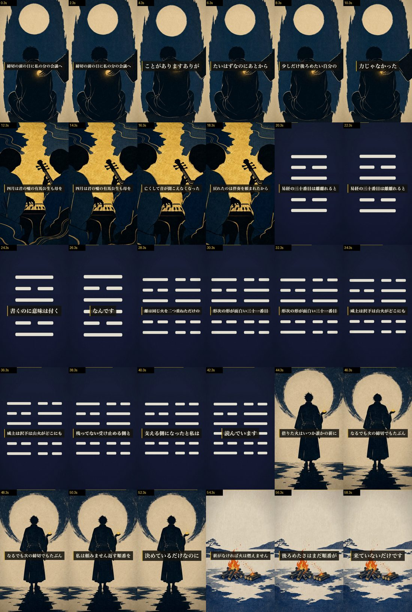

四月は君の嘘 × 離 → 隣の卦「咸」／ 59.9秒 ／ 2026-07-25
S01 締切の前の日に、私の分の会議へ、代わりに出てもらったことがあります。
ありがたいはずなのに、あとから少しだけ、後ろめたい。自分の力じゃなかったな、って。
S02 四月は君の嘘の有馬公生も、母を亡くして音が聞こえなくなった。戻れたのは、伴奏を頼まれたからです。
S03 易経の三十番目は、離。離れる、と書くのに、意味は、付く、なんですよね。
S04 離は、同じ火を二つ重ねただけの形です。次の形が、面白い。三十一番目、咸。
上は沢、下は山。火が、どこにも残っていない。受け止める側と、支える側になった、と私は読んでいます。
S05 借りた火は、いつか誰かの薪になる。でも次の締切でも、たぶん私は頼みません。
返す順番を、自分で勝手に決めているだけなのに。
S06 薪がなければ、火は燃えません。後ろめたさは、まだ順番が来ていないだけです。
減点はほぼ1点に集中しています：「S04の“へえ”が、六爻図で目に見える証拠になっていない」。
満点だった軸：close_and_loop 10/10（S01「後ろめたい」→S06「後ろめたさは、まだ順番が来ていないだけです」で語ごと冒頭へ戻る・CTA無し）。self_recognition 18/20（締切という同じ場面に刃が返っている）。事実面は db 逐語・出典URL付きで破綻ゼロ、かをりの結末・手紙にも触れていません。
このまま出すのが良いと思っています。理由は3つ。
別案：出さずに、六爻図カードに「上卦／下卦の区切り＋自然名（火・火／沢・山）」を描く改修をしてから作り直す（半日仕事・以降の全ショートに効く）。
| 項目 | 結果 |
|---|---|
| 尺 | 59.9s（45-60s） |
| モーション | 絵カット全4枚にDepthFlow（六爻図はKenBurns固定＝対象外） |
| 字幕同期 | 全シーン カバレッジ≥85%・時刻単調 |
| 黒落ち / 左右対称 | なし / なし |
| 一次情報 | db逐語（離#30 上下とも火／咸#31 上=兌沢・下=艮山）＋作品事実は出典URL付き |
| fork独立採点 | 88 / 90（3周・最良版採用） |
